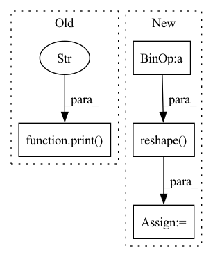

Pattern ID :14569

Before Change
//what"s happening here?
print("REWARD SHAPE: ", inputs["reward"].shape)
print("X shape: ", x.shape)
clipped_reward = torch.clamp(inputs["reward"], -1, 1).view(T * B, 1)
core_input = torch.cat([x, clipped_reward, one_hot_last_action], dim=-1)
//////////////////////////////////////////////////////////////////////////////////////////////////////////////////////////////transformer
// if self.use_lstm:
After Change
baseline = self.baseline(core_output)
// print("POLICY SHAPE: ",policy_logits.shape)
policy_logits = policy_logits.reshape(T*B, self.num_actions)
// print("TMP : {} Original : {}".format(policy_logits_tmp[:3, :], policy_logits[:3, :3, :]))
if self.training:
// Sample from multinomial distribution for explorationx
action = torch.multinomial(F.softmax(policy_logits, dim=1), num_samples=1)
In pattern: SUPERPATTERN
Frequency: 3
Non-data size: 4
Instances
Fragment ID: 47937823
Project Name: jerrodparker20/adaptive-transformers-in-rl
Commit Name: 6f99ef29b7f170d3f6d169d073705131bfd8ea8f
Time: 2020-03-13
Author: shakti.shrivastava13@gmail.com
File Name: Model/monobeast.py
M Class Name: AtariNet
N Class Name: AtariNet
M Method Name: forward(3)
N Method Name: forward(3)
M Parent Class: nn.Module
N Parent Class: nn.Module
M File Name: Model/monobeast.py
N File Name: Model/monobeast.py
M Start Line: 739
M End Line: 794
N Start Line: 801
N End Line: 820
'>
Before Change
for image_batch in images:
output = self.backbone(image_batch)
outputs.append(output)
print(torch.cat(outputs), "OUTPUT SHAPE 2D context")
return torch.cat(outputs)
def forward(self, images):
Forward pass from images to representations.
After Change
outputs.append(output.reshape(output.shape[0], output.shape[1], -1))
outputs = torch.cat(outputs, dim=2)
representations_concat = self.representation_fc(outputs)
representations = output.reshape(representations_concat.shape[0], representations_concat.shape[1], representations_concat.shape[2]//8,
representations_concat.shape[2]//8)
else:
images_by_frame_group = torch.permute(images, (1, 0, 2, 3, 4))
image_batch = images_by_frame_group[0]
representations = self.backbone(image_batch)
'>
Fragment ID: 47937827
Project Name: danbider/lightning-pose
Commit Name: 0d32330b5411d0c60b904da26ca649bc34361e4c
Time: 2022-04-15
Author: colehurwitz@gmail.com
File Name: lightning_pose/models/base.py
M Class Name: BaseFeatureExtractor
N Class Name: BaseFeatureExtractor
M Method Name: get_representations(3)
N Method Name: get_representations(2)
M Parent Class: LightningModule
N Parent Class: LightningModule
M File Name: lightning_pose/models/base.py
N File Name: lightning_pose/models/base.py
M Start Line: 157
M End Line: 162
N Start Line: 141
N End Line: 173
'>
Before Change
for image_batch in images:
output = self.backbone(image_batch)
outputs.append(output)
print(torch.cat(outputs), "OUTPUT SHAPE 2D context")
return torch.cat(outputs)
def forward(self, images):
Forward pass from images to representations.
After Change
outputs.append(output.reshape(output.shape[0], output.shape[1], -1))
outputs = torch.cat(outputs, dim=2)
representations_concat = self.representation_fc(outputs)
representations = output.reshape(representations_concat.shape[0], representations_concat.shape[1], representations_concat.shape[2]//8,
representations_concat.shape[2]//8)
else:
images_by_frame_group = torch.permute(images, (1, 0, 2, 3, 4))
image_batch = images_by_frame_group[0]
representations = self.backbone(image_batch)
'>
Fragment ID: 47937826
Project Name: danbider/lightning-pose
Commit Name: b683cb69d8df9187f8708c2788450fd68519e9cf
Time: 2022-04-15
Author: colehurwitz@gmail.com
File Name: lightning_pose/models/base.py
M Class Name: BaseFeatureExtractor
N Class Name: BaseFeatureExtractor
M Method Name: get_representations(3)
N Method Name: get_representations(2)
M Parent Class: LightningModule
N Parent Class: LightningModule
M File Name: lightning_pose/models/base.py
N File Name: lightning_pose/models/base.py
M Start Line: 157
M End Line: 162
N Start Line: 141
N End Line: 173